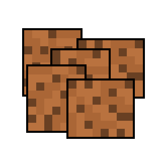

Recipe 4: Sweet and Decadent Cookie Bars
Ingredients:
- 1/2 Cup Margarine or Butter
- 1-1/2 Cups Graham Cracker Crumbs
- 1 (14oz) Can of Sweetened Condensed Milk (Not evaporateed milk)
- 1 (12oz) Package of Semi-Sweet Chocolate Chips
- 1 Cup of Peanut Butter Chips
Directions:
- Preheat oven to 350°F (Or 325°F if using a glass baking dish).
- Melt the margarine/butter in inside the oven.
- Sprinkle 1-1/2 Cups graham cracker crumbs evenly over the melted margarine.
- Pour 1 (14oz) can of sweetened condensed milk evenly over the crumbs.
- Top with chocolate and peanut butter chips and press down firmly.
- Bake for 25-30 mins- until lightly browned.
- Let cool, then cut into bars and enjoy!
- To store, cover loosely with foil/plastic wrap at room temperature.
